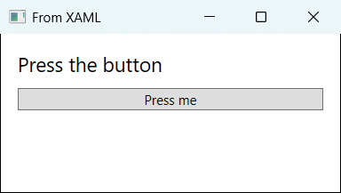
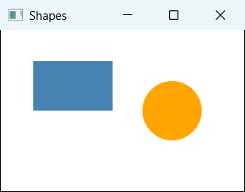
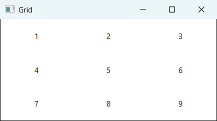
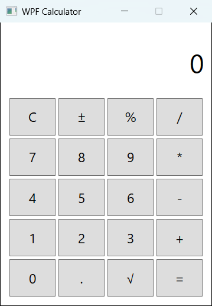

WPF
Windows Presentation Foundation from Ring — windows, panels, controls, XAML, data binding, shapes, brushes and animation.
A first WPF window#
load "dotnet.ring"
using { # System.Windows* starts the desktop runtime
"System.Windows"
"System.Windows.Controls"
}
oWindow = wpfWindow("Hello",300,200)
oPanel = new StackPanel()
oWindow.Content = oPanel
oPanel.Children.Add(wpfLabel("Hello from WPF"))
wpfRun(oWindow)The using block starts the desktop runtime (it calls dnUseDesktop() when it sees a System.Windows* namespace). Import the WPF namespaces you need: System.Windows, .Controls, .Controls.Primitives, .Media, .Shapes, .Data, .Input, .Documents, .Markup, .Threading, .Media.Imaging, .Media.Animation...
Names that start with Wpf#
WPF has classes with the same names as Windows Forms and System.Drawing classes. To keep both usable in one program, the WPF version of a clashing name starts with Wpf:
| Windows Forms / System.Drawing | WPF |
|---|---|
Button, TextBox, Label | WpfButton, WpfTextBox, WpfLabel |
Point, Color, Brush | WpfPoint, WpfColor, WpfBrush |
Binding, Rectangle | WpfBinding, WpfRectangle |
The others keep their name: Window, Grid, StackPanel, Canvas, Slider, Ellipse, Thickness...
A global variable named like an attribute (x, width) is read before obj.X in Ring. Keep program state in functions, as in the examples.
The helpers#
| Helper | Does |
|---|---|
wpfWindow(title, w, h) | a window of the given size, centered |
wpfLabel(text), wpfText(text) | a Label / TextBlock |
wpfButton(text, clickCode) | a button with a click handler |
wpfBrush("SteelBlue"), wpfColor(name) | a brush or color from a name or #RRGGBB |
wpfXaml(text) | the objects of a XAML text |
wpfFind(root, name) | an element by its x:Name |
wpfRun(window) | shows the window and runs the message loop |
wpfRun(window) with --selftest | runs the checks of selftest/<program>.ring (as for Windows Forms); wpfTest(window, code) and wpfEnd() do the same steps by hand |
wpfPixel(element, w, h, x, y) | the color of a pixel of a rendered element (tests) |
XAML#
Describe the window in XAML and find the elements by name:
cXaml = '<Window xmlns="http://schemas.microsoft.com/winfx/2006/xaml/presentation" xmlns:x="http://schemas.microsoft.com/winfx/2006/xaml" Title="From XAML" Width="320" Height="180">'
cXaml += '<StackPanel Margin="15"><TextBlock x:Name="message" FontSize="18" Text="Press the button"/>'
cXaml += '<Button x:Name="press" Content="Press me" Margin="0,10,0,0"/></StackPanel></Window>'
oWindow = wpfXaml(cXaml)
oMessage = wpfFind(oWindow,"message")
oPress = wpfFind(oWindow,"press")
oPress.setClickEvent("oMessage.Text = 'The XAML button was pressed'")
wpfRun(oWindow)
Data binding#
Bind a property of one element to a property of another — without code:
oSlider = new Slider()
oSlider.Maximum = 100
oText = new WpfTextBox()
oBinding = new WpfBinding().@New([ :path = "Value" ])
oBinding.Source = oSlider
oText.SetBinding(oText.TextProperty,oBinding)
Shapes and brushes#
oCanvas = new Canvas()
oRect = new WpfRectangle() {
Width = 80
Height = 50
Fill = wpfBrush("SteelBlue")
}
oCanvas.Children.Add(oRect)
oCanvas.SetLeft(oRect,10)
oCanvas.SetTop(oRect,10)
Layout#
Grid, StackPanel, DockPanel, WrapPanel, Canvas, UniformGrid and the Thickness margin work as in XAML:

Events#
Events work like Windows Forms events: setClickEvent, setValueChangedEvent, setTextChangedEvent... Routed events can be raised from tests with RaiseEvent.
Applications#
samples/UsingDotNet/applications/WpfCalculator— a calculator whose UI is XAML.samples/UsingDotNet/applications/WpfColorMixer— sliders that mix a color.

More: WPF samples — every one with a screenshot and the source.
Where to go next#
- The tutorial chapter WPF.
- ASP.NET Core: the guide for web programs.